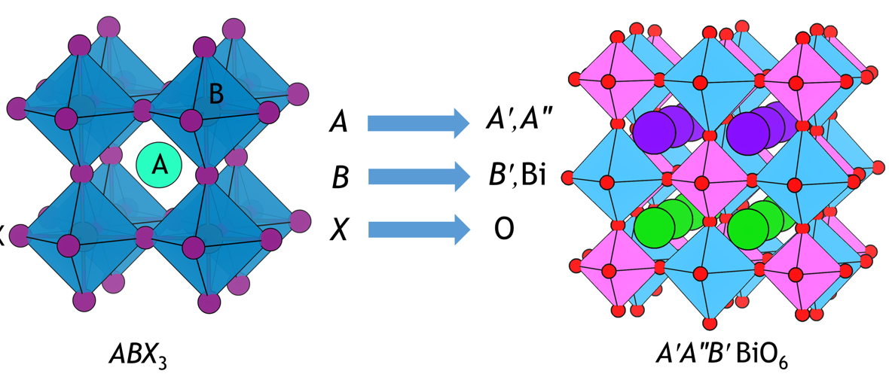
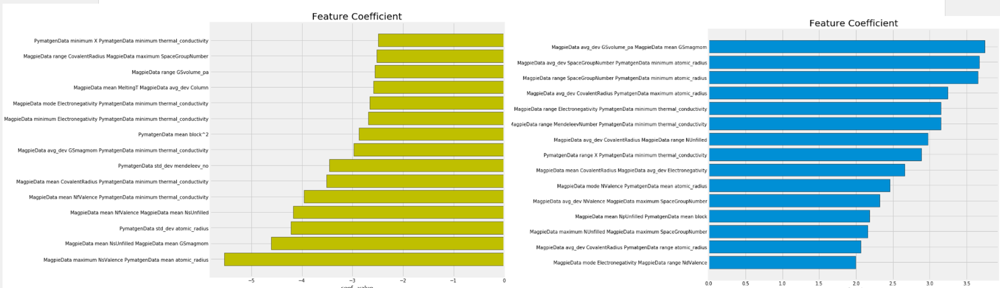

Machine learning for solar cell materials and high entropy alloy phase prediction

Over two years in Yale's MCubed Lab and Qiu Lab, I applied machine learning to two materials science challenges: predicting the existence of stable double perovskites for solar panels and predicting the phase stability of high entropy alloys. Both projects used classification techniques to narrow vast search spaces of candidate materials, saving significant experimental time and cost. I received the George J. Schulz Fellowship in Physical Sciences to support this work.
Current photovoltaic technologies are highly effective, but have a costly and highly polluting synthesis process. To make cheaper, cleaner, and more effective solar cells, experimental material scientists aim to synthesize new double perovskites to test their photovoltaic properties. Nonetheless, this experimentation is a costly process, requiring a strong theoretical understanding of possible crystals.
I spent my time sifting through thousands of crystal features to generate a simple six factor model to predict crystal stability. To complete this work, I used SciPy machine learning packages to solve this classification problem. Techniques included RandomForest model cleaning, multi-fold validation, and logistic regressions. I identified over 100 promising double-perovskites for synthesis and materials testing.
After identifying these promising materials, I continued my work with the Qiu Lab at Yale.
High entropy alloys (HEAs) are a relatively new class of materials composed of five or more principal elements in roughly equal proportions, which can exhibit exceptional mechanical properties including high strength, corrosion resistance, and thermal stability.
I applied machine learning classification techniques to predict whether a given alloy composition would form a stable single phase, multiple phases, or an amorphous structure. Using scikit-learn, I employed RandomForest classifiers, feature importance analysis, and multi-fold cross-validation to build predictive models from thousands of crystal features.
Predicting phase stability computationally is important because experimental synthesis and testing of new alloy compositions is expensive and time-consuming. By narrowing the search space with ML models, materials scientists can focus their experimental efforts on the most promising candidates.
